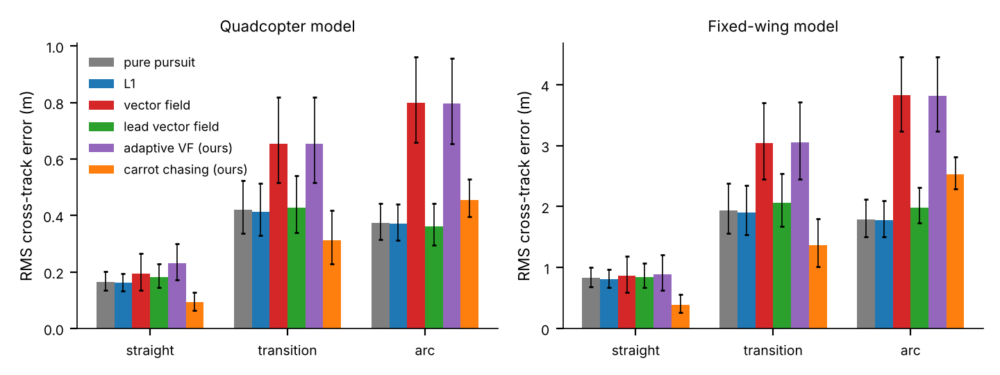
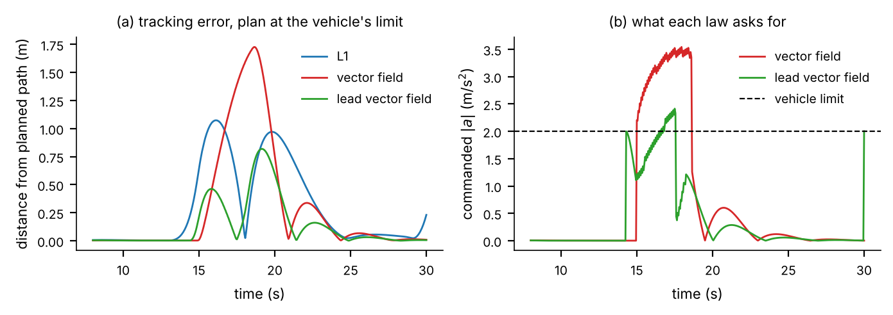
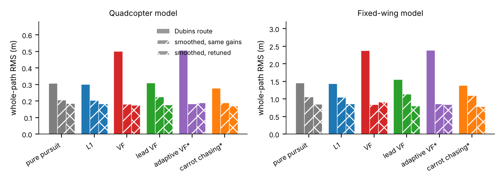
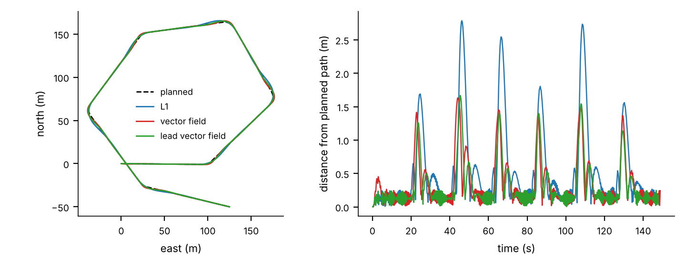

A drone flies a planned route made of lines and arcs that respect its turning limit, and a guidance law steers it back when wind, delay or a slow response push it off. This report compares six laws on a fixed-wing and a quadcopter model: pure pursuit, L1, the vector-field law, a vector field that reads the route's curvature ahead (lead vector field), and two laws adapted by the author (an adaptive vector field and carrot chasing). The test uses 12 routes not used for tuning, 18 wind, radius and strength conditions, and an exact distance-to-path metric. Two results stand. First, the route matters about as much as the law: with Dubins routes, whose curvature jumps from zero to full at each corner, the six laws differ by 0.23 m (quadcopter) while smoothing the route lowers the average law's error by about 0.17 m, and the law ranking changes with the route (the plain vector field is fifth of six on Dubins routes and first on smoothed ones). Second, at the turning limit the plain vector field loses because its response lag makes it ask for 3.5 m/s² when 2.0 m/s² is available; reading the curvature one lag ahead removes most of that loss. On an ArduCopter simulator both vector-field laws tracked about twice as well as L1 in single flights, which does not match the model, so the simulation ranking cannot yet be claimed to transfer. All code, 194 tests and the claim list are public.
Fixed-wing aircraft cannot stop in the air, and a quadcopter flying fast can only push sideways so hard, so both have a minimum turning radius rmin and follow routes built from lines and arcs that respect it. The route is only a line on a map; a guidance law must decide at every moment how much to turn. Papers usually compare laws on one kind of route and rank them. This report asks four questions: how much of the tracking error comes from the guidance law and how much from the shape of the route it is asked to follow; does the law ranking change with the route; why does the plain vector field fail when the plan is at the turning limit, and can a simple change fix it; do the simulation results hold on a real autopilot (ArduCopter) in its simulator?
Contributions. First, a test bench whose laws are checked against closed-form answers, ArduPilot's own L1 formula and an independently written copy (194 tests); second, a separation of the planner effect from the controller effect, with error measured on straights, transitions and arcs; third, a mechanism for the vector-field failure at the limit and a one-parameter remedy; and fourth, a small ArduCopter check with its disagreements stated. The work is a comparison, not a new method.
The L1 logic of Park, Deyst and How commands a sideways acceleration toward a point a fixed distance ahead; with damping ζ = 1/√2 its waypoint form is the formula used in ArduPilot. Vector-field methods (Nelson et al.; Lawrence et al.) define a desired course at every position, along the path near it and turning toward it when far. Sujit et al. survey path-following methods. Fari et al. (2020) show that the standard vector field degrades with unmodelled course dynamics or unknown wind and propose an adaptive law; Wang et al. (2022) remove the need for prior knowledge of the course time constant and wind. Lu et al. (2024) add a wind estimate to the guiding vector field, and Pugi et al. (2025) add a sliding-mode term. The adaptive vector field here is the author's own simple version in the spirit of Fari and Wang; their equations were not available to the author, so it is not a reproduction. The vector-field form used is the standard straight-line field plus curvature feed-forward, not the orbit field of Beard and McLain. A short literature search did not find a study that separates planner and controller effects for Dubins routes across several laws and an ArduPilot simulator, but that does not prove none exists; the contribution is stated as a comparison.
Each vehicle is a point at constant airspeed V steered by a lateral acceleration a limited to amax, so the minimum turning radius is rmin = V²/amax. The acceleration follows the command with a first-order lag τ, with wind added to the ground velocity: da/dt = (asat − a)/τ, asat = clip(acmd, −amax, amax). Fixed-wing: V = 18 m/s, rmin = 50 m, τ = 0.5 s. Quadcopter: V = 5 m/s, rmin = 12.5 m, τ = 0.3 s. The reference is a Dubins route through waypoints; its curvature never exceeds 1/ρ for a planned radius ρ but jumps between 0 and 1/ρ at every corner. A plan is "at the limit" when ρ = rmin. A "smoothed" route is the same Dubins route with its curvature smoothed by a Gaussian filter (not a clothoid).
With ground speed Vg, aim distance d, angle η between velocity and the line to the aim point, signed distance e from the path, path direction χp and curvature κ:
Pure pursuit and L1 command acmd = 2Vg² sinη / d, with the aim point a fixed arc length ahead (pure pursuit) or the first path point a fixed straight-line distance away (L1). The vector field law sets χd = χp − χ∞(2/π) arctan(kee) and commands acmd = Vgkχ(χd − χ) + Vg²κ(s). The lead vector field is the same, but the feed-forward curvature is read a distance T Vg ahead, κ(s + T Vg); with T = 0 it is the plain law. The adaptive vector field (the author's version) adds two slowly learned terms, a curvature gain and a bias, with a leakage term that keeps them bounded. Carrot chasing (the author's arc-length form) commands Vgκη toward a carrot a fixed time ahead; the textbook tangent-line form is much worse (+0.32 m quadcopter, +1.62 m fixed-wing whole-path), so its good numbers belong to this adaptation plus tuning.
Routes and conditions. Gains were tuned by random search on routes with seeds 1000–1005, separately per law and vehicle. The final comparison uses 12 other routes (seeds 2000–2011). Conditions: wind 0, 15 or 30% of airspeed; planned radius 1.0, 1.5 or 2.0 times rmin; true limit equal to or 20% below the assumed one: 18 conditions, six laws: 1,296 runs per vehicle. None failed to finish.
Metric. Cross-track error is the exact distance to the route polyline (the nearest-sample metric has a floor of about 0.14 m that hides small errors). Whole-path RMS is in metres, after the first 4 rmin of travel. Each sample is labelled straight, transition or arc by the planned curvature, with a window of one turning radius around each arc end. Intervals are 95% bootstrap over routes; differences between laws are paired within a scenario, and a "tie set" lists the laws whose paired interval to the best includes zero.
Planner effect. The same laws were re-run on smoothed routes, once with the Dubins-tuned gains and once with gains retuned on smoothed routes.
Sensitivity. Five claims were written down before the check and tested in 22 perturbed worlds per vehicle (lag ×0.5 to ×2, true limit ×0.6 to ×0.8, position and velocity noise, 0.2 s sensor delay, gusts, 30% wind).
Verification. Closed-form tests (straight line, circle, scale, rotation and mirror invariance, time-step convergence); the L1 law matches ArduPilot's waypoint formula to 0.006 m/s² at ζ = 1/√2; a second implementation written from a written specification by someone who had not seen the code agrees to 10−9 in commands. A limit: the specification and the code share an author, so a shared misreading would pass both.
ArduCopter SITL. The laws ran against ArduCopter V4.8.0-dev (1ea89b0b) software-in-the-loop through MAVProxy and pymavlink. A Python program reads position and velocity about 10 times a second, computes acmd, and sends a velocity command (the ground velocity rotated by (acmd/Vg) × 0.5 s) in GUIDED mode at 5 m/s. The same route shape was scaled to planned radii 25, 12.5 and 7.5 m. Errors are measured after the first 10 s against the planned route, using the autopilot's own position estimate; no ground truth exists. Default gains, no wind, one flight per setting.
| Whole-path RMS (m) | Pure pursuit | L1 | Vector field | Lead VF | Adaptive VF* | Carrot* |
|---|---|---|---|---|---|---|
| Quad, radius ×1.0 (at limit) | 0.486 | 0.474 | 1.018 | 0.522 | 1.023 | 0.431 |
| Quad, radius ×1.5 | 0.268 | 0.266 | 0.352 | 0.257 | 0.357 | 0.239 |
| Quad, radius ×2.0 | 0.168 | 0.166 | 0.135 | 0.149 | 0.140 | 0.163 |
| Fixed-wing, radius ×1.0 (at limit) | 2.112 | 2.056 | 4.550 | 2.238 | 4.557 | 1.727 |
| Fixed-wing, radius ×1.5 | 1.408 | 1.395 | 1.874 | 1.507 | 1.878 | 1.398 |
| Fixed-wing, radius ×2.0 | 0.868 | 0.869 | 0.725 | 0.940 | 0.721 | 1.030 |
When the plan is at the limit the plain vector field has about twice the error of L1 (1.018 vs 0.474 m, 4.55 vs 2.06 m), and the lead vector field removes most of the gap (0.522, 2.24). When the plan leaves room (radius ×2) the order reverses and the plain vector field is the best of the original four. No law wins everywhere. Carrot chasing has the lowest whole-path error when the plan is tight (radius ×1.0 and ×1.5), and in the pooled comparison over all 18 conditions it is the only law in its tie set; at radius ×2 it is not the best. Its clearest advantage is on straight segments (Figure 1: 0.094 m against L1's 0.162 m for the quadcopter, holding in 95% of the perturbed worlds). Its arcs are worse than L1's in only 27–32% of the perturbed worlds, so that comparison is condition-dependent. The adaptive vector field ties the plain one (0.507 vs 0.502 m) and saturates more (9.4% of samples against 7.9%), so adaptation of this simple kind did not help here; this says nothing about the published adaptive laws.

The vector-field family saturates 3–4 times as often as L1 and pure pursuit (7.9–9.4% of samples against 2.6%).
A trace on one route (Figure 2) gives the mechanism. The plain law applies the curvature of the point it is on. The vehicle answers one lag later, so it turns late and then has no spare authority to catch up: the command rises to 3.5 m/s² against the 2.0 m/s² limit, stays saturated for about 3.6 s, and the error grows to 1.7 m. The lead vector field starts about 0.7 s earlier, its demand peaks near 2.4 m/s², and the error peaks at 0.8 m. This was not the first explanation tried: a softer correcting field, a smaller approach angle and a cap on the feed-forward each made no difference, and removing the feed-forward made things much worse. On arc segments the lead feed-forward closes the vector field's deficit to L1 (quadcopter arc RMS 1.61 m for the vector field, 0.58 m for L1, 0.60 m for the lead law, at the limit); the lead law beat the plain one on arcs in 82–95% of the perturbed worlds. The lead time was chosen on the tuning routes only.

The curvature of a Dubins route jumps at each corner, and the first-order lag cannot follow a jump. On the smoothed route the plain vector field's error falls from 0.50 m to 0.18 m (quadcopter) and from 2.38 m to 0.84 m (fixed-wing), the largest change of any law (Figure 3). For the quadcopter, the six laws differ by 0.229 m on Dubins routes [0.175, 0.288], while changing the route changes the average law by 0.17–0.19 m [0.13, 0.23]: the same order. With gains retuned on smoothed routes the spread between laws shrinks to 0.018 m [0.002, 0.035] (quadcopter) and 0.129 m (fixed-wing). The ranking also changes: with the Dubins-tuned gains the vector field is fifth of six on Dubins routes and first of six on smoothed ones. Reference-path shape should therefore be reported and fixed when laws are compared, and a law's rank on one route type should not be read as a general ranking.

| RMS / worst error (m) | Radius 25 m | Radius 12.5 m | Radius 7.5 m |
|---|---|---|---|
| L1 | 0.69 / 1.87 | 0.87 / 2.79 | not flown |
| Vector field | 0.36 / 0.84 | 0.52 / 1.63 | 0.97 / 3.55 |
| Lead vector field | 0.34 / 0.84 | 0.49 / 1.67 | 0.59 / 2.26 |
The two vector-field laws tracked roughly 1.7–2 times as accurately as L1 at the two radii where L1 flew (Figure 4). At 7.5 m, where the plan needs about 3.3 m/s² at 5 m/s, the lead law had 39% lower RMS and 36% lower worst error than the plain law; the gap between the two grew as the turns tightened (6%, 6%, 39%), as the mechanism in 5.2 predicts. The repeat of L1 at 25 m shows the measurement is repeatable at that setting; only that setting was repeated.

Two disagreements with the model. First, in simulation L1 is clearly better than the plain vector field on Dubins routes at the limit and ties the lead law, but on the autopilot both vector-field laws beat L1. Second, every law tracked about twice as loosely on the autopilot as in the model at the same settings (L1 at 25 m: RMS 0.055 rmin). A possible reason for the first is that the velocity wrapper turns the command only partly (realised gain near horizon/Tv ≈ 0.7 at a 0.5 s horizon), which would hurt L1's single aim-point rule more than the vector field's course feedback. This is a hypothesis; the horizon sweep that would test it has not been flown. Until it is, the simulation ranking should not be assumed to hold on real vehicles.
The evidence supports three statements: the route shape explains as much of the difference between laws as the laws themselves; at the turning limit the plain vector field's lag-driven saturation is a real mechanism, and a feed-forward read about one lag ahead closes most of that arc deficit; and no law is best everywhere. It does not yet support a claim that the lead vector field is better than L1: in simulation L1 is slightly better at the limit, on the autopilot the lead law is better, and the autopilot data is thin. The strongest result, and the one least likely to depend on this model, is the first: rankings made on Dubins routes mix the effect of the law with the effect of the planner.
Outcomes. A reproducible Python test bench (194 automated tests, including a published-formula check and an independent re-implementation); a segment-resolved comparison of six laws with route-level error bars and a written claim list; a planner-versus-controller separation; an explained failure mode of the plain vector field at the turning limit with a one-parameter remedy; and ten ArduCopter SITL flights on two occasions, with a list of where model and autopilot disagreed.
What I learned. Practically: ArduPilot SITL with MAVProxy on macOS, reading the autopilot's own messages to see why it refuses to arm or change mode, and running experiments in a fixed order with a restart between flights. As research habits: an earlier version of this report made claims that did not survive a rebuild with exact metrics and held-out routes, and the rebuild kept only what the evidence supports; a single flight or route is not a result; tuning data must be kept apart from test data; each claim should name its evidence before it is written; and prior work must be searched before claiming novelty. Concepts covered: Dubins paths, minimum turning radius, lateral-acceleration limits, response lag and saturation, route-level bootstrap intervals.
Model. The model is a point with a limit and a lag; fixed-wing results are simulation only, and ArduPlane has not been run. Autopilot evidence. One quadcopter, one route shape, no wind, one flight per setting except L1 at 25 m, L1 not flown at 7.5 m, no ground truth (the autopilot's position estimate against the plan), and an unknown true turning limit. The roughly two-fold simulation-to-SITL gap and the L1 reversal are unexplained. Not verified. Fari et al. and Wang et al. were not read, so the adaptive law is the author's own; the vector field was not checked against the Beard and McLain book; the novelty statement in Section 2 rests on a short search. Not rerun after the rebuild. The robustness runs (noise, delay, slower response) and the lead-time sweep come from an earlier version of the code and are not reported here as results. Choices. The Dubins and smoothed routes, the tuning method and the 12 test routes are choices; the intervals are wide for several comparisons and most whole-path rankings are tie sets.
Plan. First, fly the horizon sweep (0.25, 0.5 and 0.75 s), L1 at 7.5 m and repeats of every cell, and fit the copter's real lag and gain from the step test and logs. Then add wind in SITL and more routes, read Fari and Wang and compare with their adaptive law, run the fixed-wing case in ArduPlane SITL, check novelty against the planner-versus-controller literature, and finally fly on real hardware with a supervisor and a safety pilot.
For curvature-limited vehicles the route and the guidance law cannot be judged separately: on Dubins routes the planner's curvature jumps explain much of the vector field's deficit, and law rankings change when the route is smoothed. At the turning limit the plain vector field fails because its response lag makes it ask for more turning than exists, and reading the curvature one lag ahead removes most of the arc error. Both findings are from a simple model, and the ArduCopter data is a small check that partly disagrees with it.
ArduPilot Development Team, "ArduPilot: open source autopilot," https://ardupilot.org.
R. W. Beard and T. W. McLain, Small Unmanned Aircraft: Theory and Practice, Princeton Univ. Press, 2012 (not checked against this work).
S. Fari, X. Wang, S. Roy and S. Baldi, "Addressing unmodeled path-following dynamics via adaptive vector field: A UAV test case," IEEE Trans. Aerospace and Electronic Systems, vol. 56, no. 2, pp. 1613–1622, 2020, doi: 10.1109/TAES.2019.2925487.
D. A. Lawrence, E. W. Frew and W. J. Pisano, "Lyapunov vector fields for autonomous unmanned aircraft flight control," J. Guidance, Control, and Dynamics, vol. 31, no. 5, pp. 1220–1229, 2008.
H. Lu, L. Gao, Y. Yan, M. Hou and C. Wang, "Wind disturbance compensated path-following control for fixed-wing UAVs in arbitrarily strong winds," Chinese J. Aeronautics, vol. 37, no. 2, pp. 431–445, 2024, doi: 10.1016/j.cja.2023.09.020.
D. R. Nelson, D. B. Barber, T. W. McLain and R. W. Beard, "Vector field path following for miniature air vehicles," IEEE Trans. Robotics, vol. 23, no. 3, pp. 519–529, 2007.
S. Park, J. Deyst and J. P. How, "A new nonlinear guidance logic for trajectory tracking," AIAA Guidance, Navigation, and Control Conf., Providence, RI, 2004, AIAA 2004-4900.
S. Park, J. Deyst and J. P. How, "Performance and Lyapunov stability of a nonlinear path following guidance method," J. Guidance, Control, and Dynamics, vol. 30, no. 6, pp. 1718–1728, 2007.
L. Pugi, L. Franchi, S. Favilli and G. Mattei, "A sliding mode approach to vector field path following for a fixed-wing UAV," Robotics, vol. 14, no. 1, art. 7, 2025, doi: 10.3390/robotics14010007.
P. B. Sujit, S. Saripalli and J. B. Sousa, "Unmanned aerial vehicle path following: A survey and analysis of algorithms for fixed-wing unmanned aerial vehicles," IEEE Control Systems Magazine, vol. 34, no. 1, pp. 42–59, 2014.
X. Wang, S. Roy, S. Fari and S. Baldi, "Adaptive vector field guidance without a priori knowledge of course dynamics and wind," IEEE/ASME Trans. Mechatronics, vol. 27, no. 6, pp. 4597–4607, 2022, doi: 10.1109/TMECH.2022.3160480.